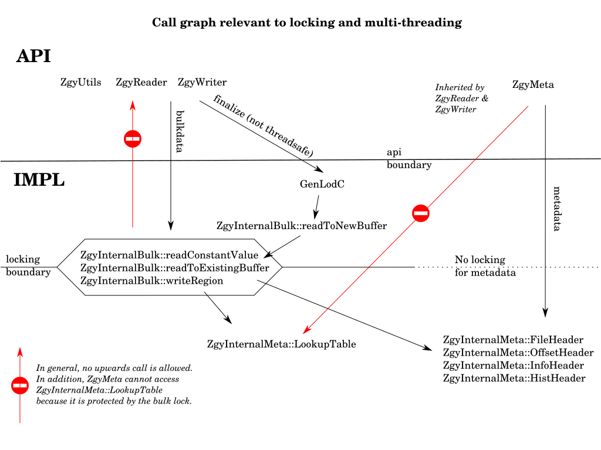

Last updated: 2020-11-25
To make the write() method thread safe for application code it will need to place a lock whenever it needs to access a shared resource. The risk of forgetting a lock somewhere is high. I believe it is safer (but still not risk free) is to by default a per-file lock should be held whenever doing any bulk access. The lock can then be temporarily dropped then re-acquired when doing simple operations that clearly do not access shared data. The risk now is to make sure that general lock is set in the first place.
The general rule will be to set the lock when transitioning from the api layer to the implementation layer. The lock is optional when accessing metadata that is immutable once the file has been opened. A more detailed design is shown in the following figure.

To avoid deadlocks, all locks will be assigned a rank. Code that is holding a lock with rank N is forbidden to call code that directly or indirectly might cause a lock with the same or higher rank to be acquired. Or to put it simpler: If you want multiple locks then you need to acquire them in a specific order.
Note that I won't try to check this at runtime. That is rather difficult. Also not worth he trouble when there are just a few locks.
The API layer will not have any locks.
The implementation layer will have one lock per open file in ZgyInternalBulk::_bulk_lock (rank 10) to protect reading and writing data bricks and for reading and changing the lookup tables.
The implementation layer can also use ZgyInternalBulk::_misc_lock (rank 0) as a very short lived protection of some data structures. Rank 0 implies that no other locks may be acquired while holding _misc_lock, while it is safe to hold any other lock already.
The meta part of the implementation layer doesn't in general need any locking because most the information is immutable after the file has been opened. The exceptions are handled by finding out which API functions might trigger changing the value, and then declaring that as thread safe. Lookup tables (sort of part of the meta data) are protected by _bulk_lock.
This means it is safe to access metadata both with and without holding _bulk_lock.
Since _bulk_lock is owned by ZgyInternalBulk but protects data in two of the meta headers (lookup tables), it is the responsibility of ZgyInternalBulk members to make sure the lock is held when accessing those. And, conversely, no other code than members of ZgyInternalBulk are allowed to access them. TODO verify.
Any code that implements caching is responsible for protecting the cache. If a lock is needed then this will have a lower rank than _bulk_lock. This means that _bulk_lock may or may not be held when the cache is accessed. AND, it means that while the cache lock is held, the code is forbidden to call any method that could potentially cause _bulk_lock to be acquired. Since the file layer sits below the bulk- and meta layer this ought to be doable.
A file back-end may declare itself as either thread safe or not. If not thread safe then _bulk_lock will probably be held when doing reads or writes. But don't count on it. Related: xx_threadsafe() applies to both read and write. Do I needs more granularity?
Several methods in ZgyReader, ZgyWriter, ZgyUtil will be declared as not thread safe. No other operations, even those methods normally considered thread safe, may be pending when these are executed. The code will not set a lock because that could easily deadlock. There might be a check though. Set a flag saying that one of these operations are in progress and by whom. The flag is a simple variable because it is protected by the main lock. Anybody that sets or re-acquires the main lock should then immediately check whether the "owner" flag is set and is not this thread. Throw an error if the check fails.
The following methods might need a private lock.
These methods will set the file-level lock: MAKE SURE they are not accidentally called from below with the lock already held. Yes I have heard about recursive locks. But those are a major code smell and suggests your call graph looks like spaghetti.
For purposes of locking, the following will be treated as part of the API layer. I.e. they will not lock, and it is not allowed to call them with the lock already set.
These methods are at a lower level. Unless otherwise noted the lock should already be held when they are invoked.
One important exception: Inside ZgyInternalBulk::readToExistingBuffer() the lock will be dropped before _file->xx_readv() is invoked, if the backend is thread safe. If not then the lock should be dropped inside the deliverance lambda when the read returns. Either way the ZgyInternalBulk::_deliverOneBrick() method expects to be called without the lock.
If the application uses multi threaded writes of data that is not aligned to brick boundaries then the library needs to process these as read/modify/write. This is problematic with respect to multi threading because the read part might need data from a brick waiting to be flushed from another thread. There are ways around this but all are somewhat unpalatable.
Do locking at block level, so a read from a brick that is pending write is blocked. This adds both overhead and complexity.
Do locking of rectangular regions, done at the same place where the regular lock is acquired. This locking is coarser and thus has less overhead but more expensive to code.
Only allow muli threaded write when the output is a compressed local file. Compressed files are not allowed to (or at least really should not) write misaligned data. This is what the old ZGY-Public library does. And in the old code the stand alone compress application was the only one allowed to do parallel writes. Incidentally, am I sure this was respected by Petrel? I guess that question is getting rather academic now.
Only allow writing misaligned data if the application explicitly promises not to use multi threading. Throw an error if the app tries to multi-thread without making that promise. I don't like this solution because it makes the application even more aware of the ZGY brick size, Which ought to have been an implementation detail.
Whenever a misaligned request is seen, place a super-lock that eventually causes all the current writes to complete. Then perform the r/m/w in a single thread, then open up for regular traffic. This is simpler than "lock rectangular regions" but does more coarse grained locking. The main caveat with this approach is that if the application makes one misaligned write request it is reasonable to assume that most subsequent requests will also be misaligned. Which means the execution ends up completely serialized anyway.
When a zgy file is on the cloud or meant to be moved to the cloud it needs to have its bricks written in a specific order for performance. This gets tricky to handle if doing writes in parallel. A compromise may be needed. Application must write full brick-columns (ensuring that columns stay together but giving less opportunities for parallelization. The file on the other hand allows individual columns to be stored at random locations. Giving somewhat but not terribly worse performance.
Another possibility is to have the application explicitly state which regions will have non-constant data. If it kows. All bricks can then be pre-allocated in the right order before any real writes start. This does make the api more difficult to use, though. This is generally considered a bad thing.